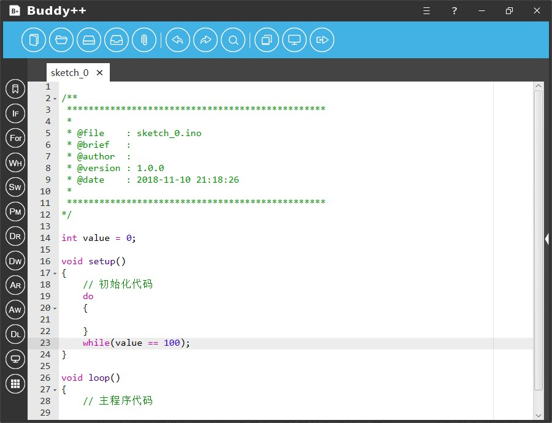

While语句同样是实现程序循环结构的重要工具，Buddy++通过辅助工具协助初学者使用基于While语句或Do…While语句的循环结构编程，While语句的含义是当条件成立时一直循环，Do…While语句的含义是一直循环直到条件成立。
使用时开发者点击左侧工具栏纵向第四个图样为“WH”简写的图标即可弹出“While条件循环”工具。

“While条件循环”工具与“If条件循环”工具使用方式类似，我们同样需要指定两个用于逻辑判断的变量和逻辑条件，不同的是工具将生成的是基于While语句的循环结构代码片，当开发者指定的条件成立时程序将一直执行。此外，如果开发者勾选了“do”复选框时工具生成的是基于Do…While语句的循环结构代码片，程序将一直循环执行直到开发者所指定的条件成立而跳出循环。